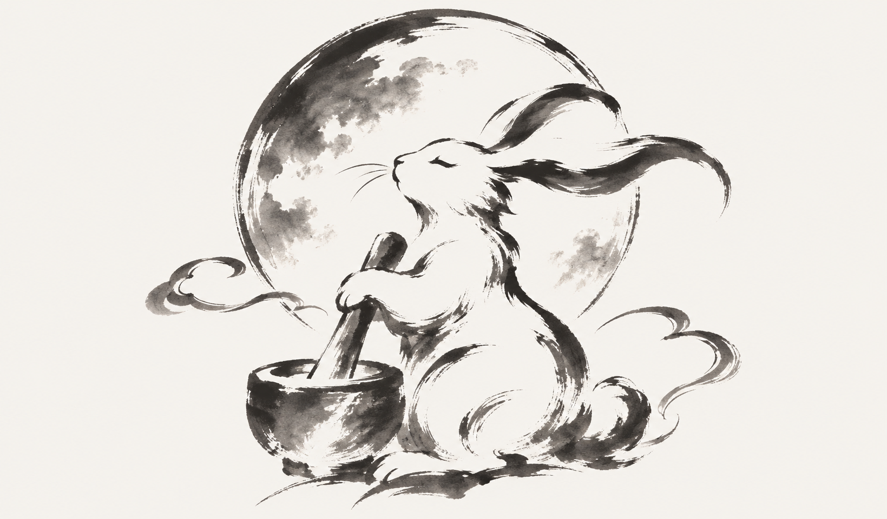

MEMBER 01 / 05
WOLDAM MEMBER
루온RUON
누군가를 기쁘게 하는 일을
자신의 가장 중요한 사명으로 믿는 작은 영물.
메인 보컬
- ORIGIN
- 월궁(月宮)
- ROLE
- 월궁의 떡방아지기
- HEIGHT
- 175cm
- PERSONALITY
- 성실하고 책임감 강한 막내

01 THE MOON PALACE
매일 같은 시간,
누군가의 풍요를 위해.
루온은 보름달이 뜰 때마다 인간들이 풍요롭게 살기를 바라며 월궁에서 떡방아를 찧었다. 한 번도 늦잠을 자지 않고, 정해진 일을 미루지도 않았다. 그에게 자신의 일은 무엇보다 중요한 약속이었다.
다만 월궁은 인간 세상과 너무 멀었다. 자신이 만든 떡을 먹은 사람들이 얼마나 행복해하는지는 직접 볼 수 없었다.
02 A SONG HEARD BELOW
처음으로,
기쁨이 바로 닿았다.
어느 추석날 호기심을 이기지 못하고 인간 세상으로 내려온 루온은 가족들이 송편을 나누고 노래를 부르는 모습을 마주한다. 자신도 모르게 노래를 따라 부르자, 곁의 아이가 환하게 웃으며 말했다. “노래 진짜 잘한다!”
떡을 만들 때보다 더 직접적으로 누군가를 기쁘게 할 수 있다는 사실. 그 순간이 루온을 노래로 이끌었다.
03 THE RESPONSIBLE MAKNAE
꼼꼼하게 준비한
새로운 사명.
인간 세상에 오기 전, 루온은 월궁의 토끼들에게 자신의 일을 직접 가르치고 모든 일을 정리했다. 가장 작고 어린 멤버지만 준비성만큼은 누구보다 철저한 이유다.
지금도 그는 연습 시간표를 챙기고 형들의 지각을 단속한다. 무대에서는 실수로 관객을 실망시킬까 가장 긴장하지만, 첫 소절이 시작되면 맑고 아름다운 목소리로 모두를 기쁘게 한다.